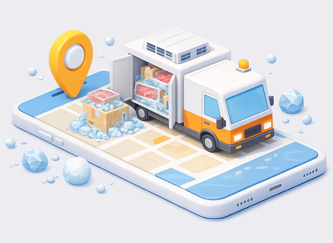
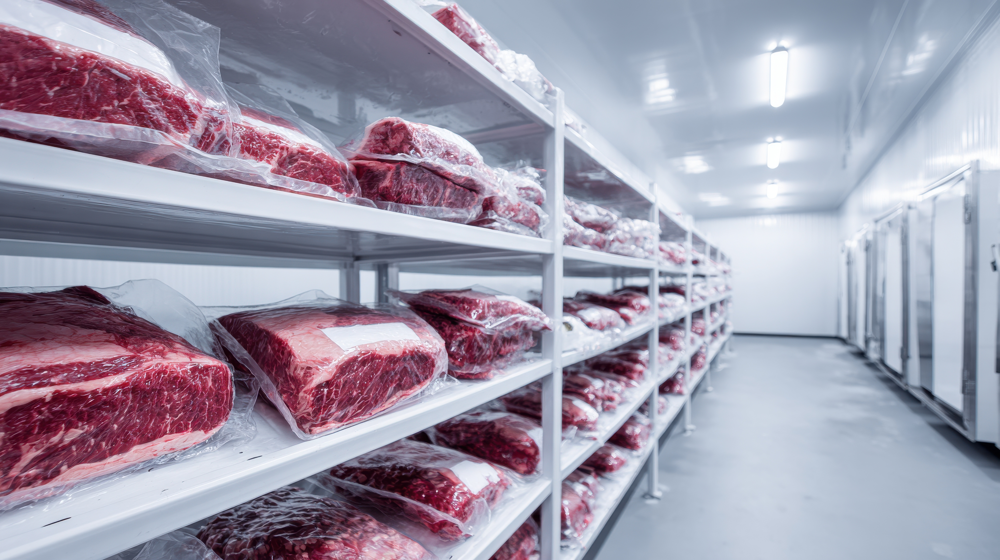
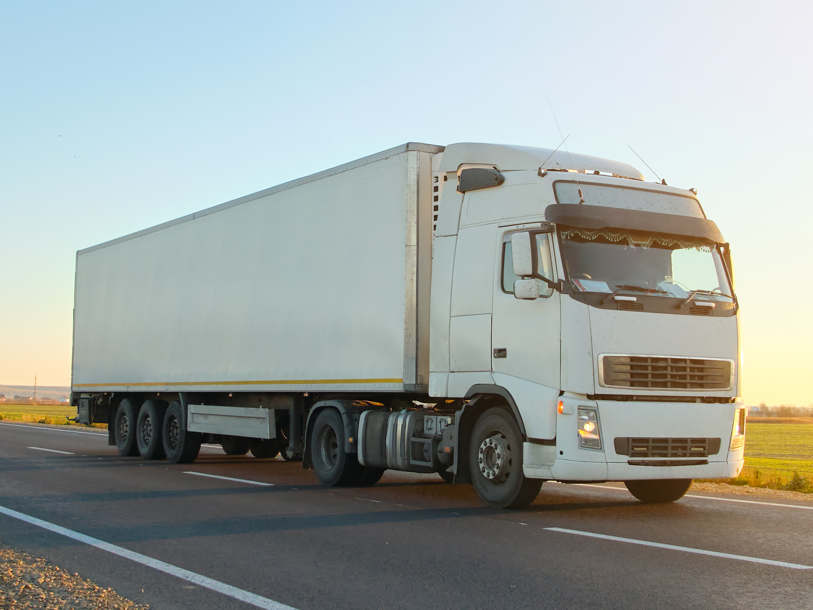
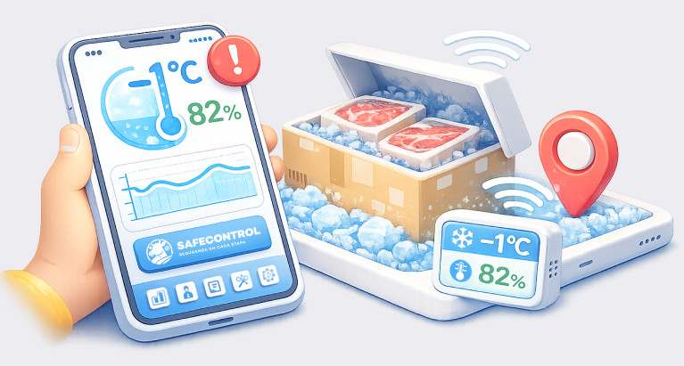

Quem Somos
Dados confiáveis para operações mais seguras e eficientes.
Somos uma empresa focada em monitoramento inteligente da cadeia do frio.
Desenvolvemos soluções IoT que garantem controle total da temperatura e umidade, ajudando empresas a preservar qualidade, reduzir perdas e otimizar processos logísticos.

Monitoramento em tempo real

Mais controle, menos perda no transporte

Preservação da qualidade do produto
Nossa solução
Monitoramento inteligente
no transporte de carnes
Nossos sensores IoT acompanham em tempo real as condições de temperatura e umidade durante o
transporte.
Os dados são em um dashboard com alertas e análises, permitindo agir rapidamente para
evitar perdas, manter o padrão de qualidade e garantir a integridade da carga.

Nossa calculadora
Simulador
Financeiro da SafeControl
Nossa calculadora financeira revela o impacto oculto do transporte inadequado na
sua operação.
Com base em dados reais como tempo fora da faixa ideal, variações ambientais e volume transportado,
ela estima quanto da sua carga foi comprometido — e, mais importante, quanto dinheiro foi perdido
nesse processo.
Qual o tamanho da carga?
Qual o peso da carga (kg):
Qual o tempo do transporte desta carga (em horas):
Selecione o tipo de carga:
Temperatura do ambiente de transporte:
Perguntas Frequentes
Como é feita a manutenção e calibração dos sensores da SafeControl?
Para garantir a máxima precisão, nossa equipe realiza vistorias e substituições preventivas programadas nos dispositivos de telemetria, mitigando qualquer risco de falha por desgaste natural.
O que acontece se o caminhão passar por uma área sem sinal de internet?
O sistema possui tecnologia de contingência offline. Os dados de temperatura, umidade e localização continuam sendo gravados localmente e são transmitidos de forma automática assim que o sinal for restabelecido.
Quem tem autorização para visualizar os dados das minhas cargas?
O acesso ao painel de controle é restrito e protegido por criptografia avançada. O gestor da frota pode definir diferentes níveis de permissão para cada usuário, garantindo que dados sensíveis não sejam expostos.
Como o sistema detecta se o sensor for removido ou violado propositalmente?
Nossos equipamentos possuem travas físicas, lacres de segurança e sensores antifraude. Qualquer tentativa de movimentação indevida ou desligamento do hardware dispara um alerta crítico imediato na central.